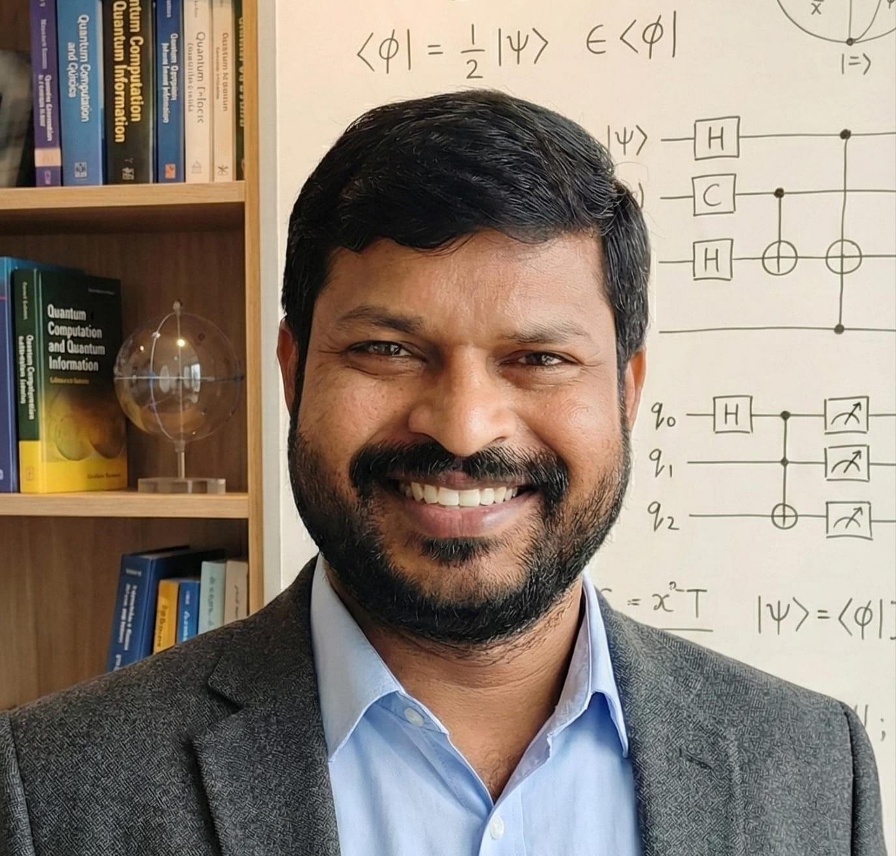

About Me
I see beauty in mathematics. Algebra and graph theory were the subjects that fascinated me the most during my master's studies. I never set out to work in quantum computing. My journey began with mathematics, and it has continued to guide every research direction I have taken since.
During my doctoral research, I worked on quantum walks, where I found that ideas from algebra and graph theory naturally extended to quantum systems. This experience gradually led me to the broader field of quantum computing.
Today, my research focuses on applying mathematical ideas to problems in quantum computing. I enjoy exploring how mathematical structures can contribute to quantum algorithms, optimization, and emerging quantum technologies.
Whether I am studying graphs, developing algorithms, or teaching mathematics, I continue to be driven by the same curiosity that first attracted me to the subject.